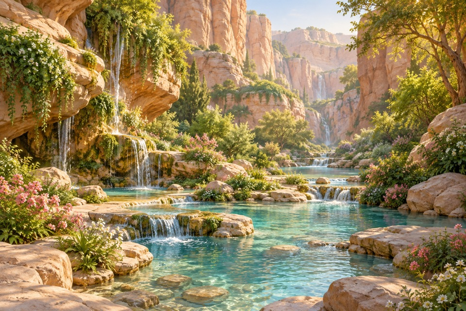
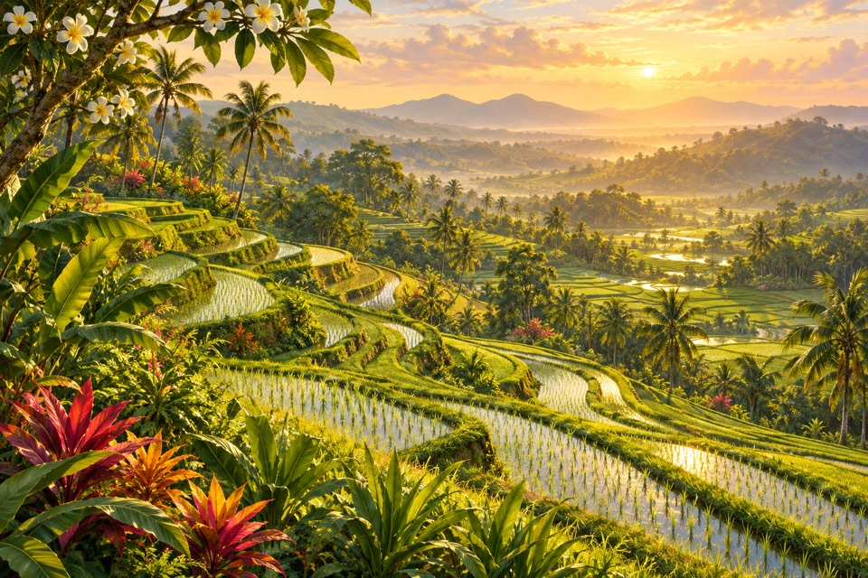
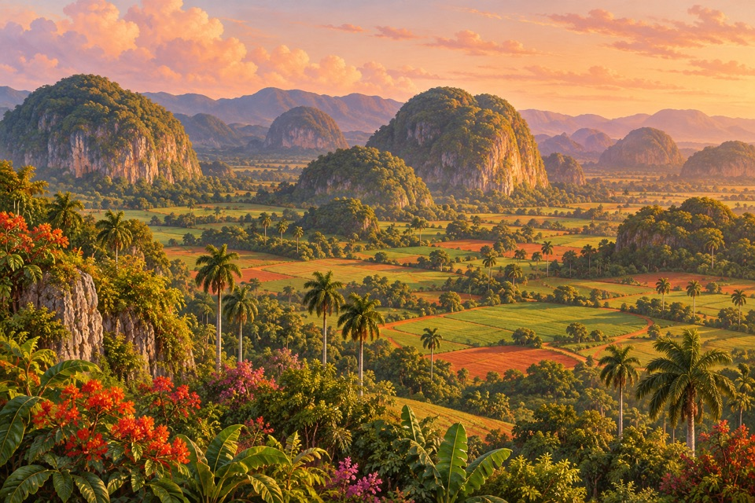
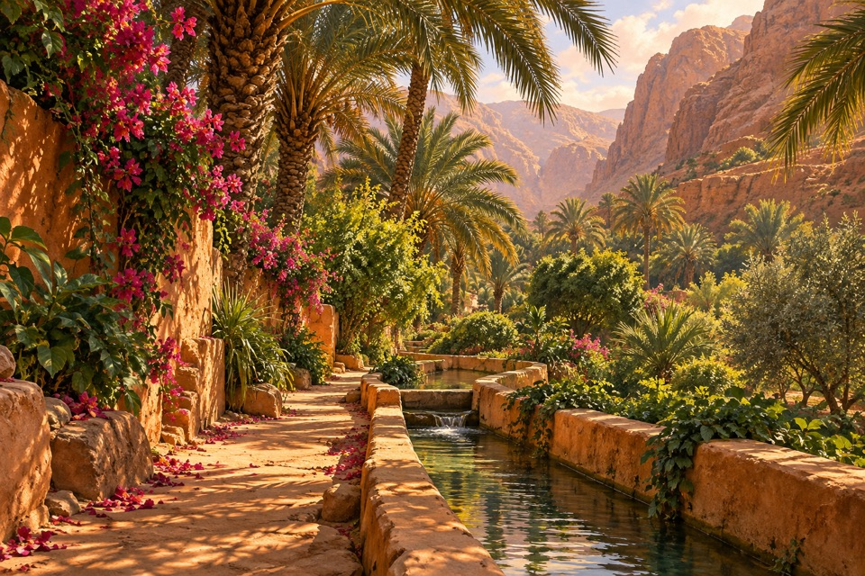
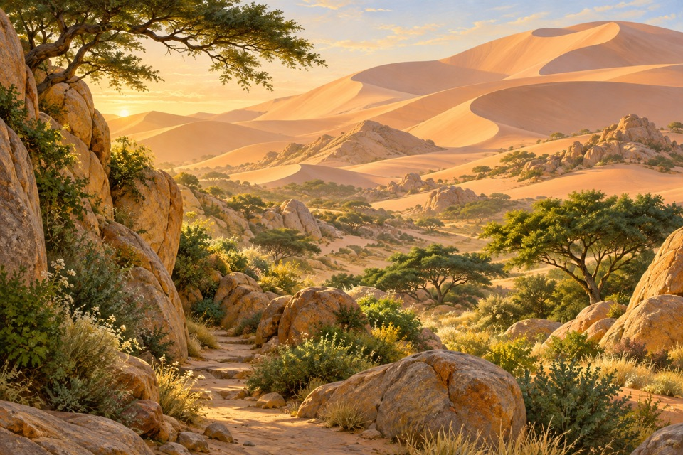
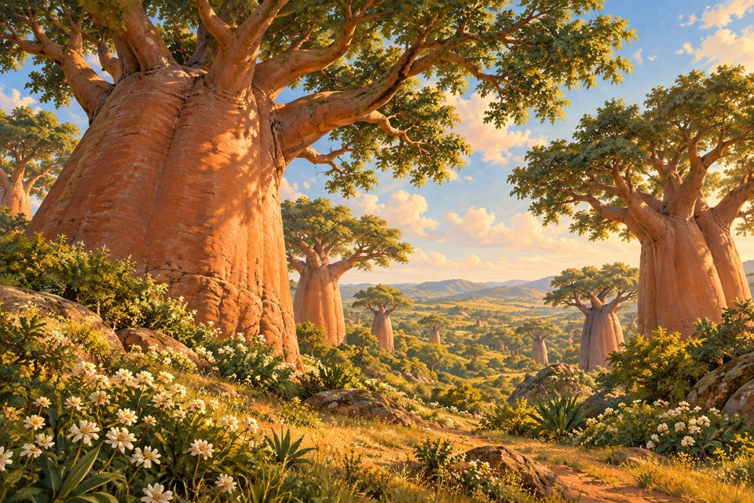
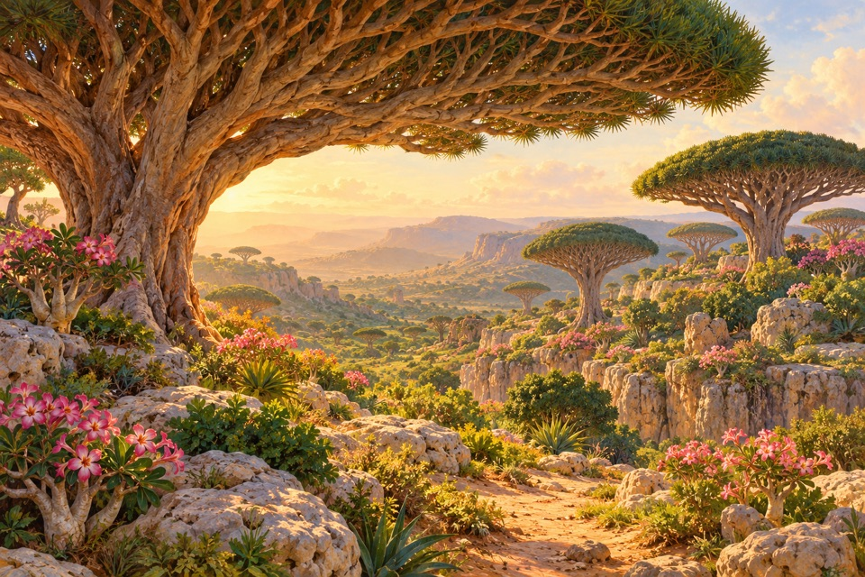
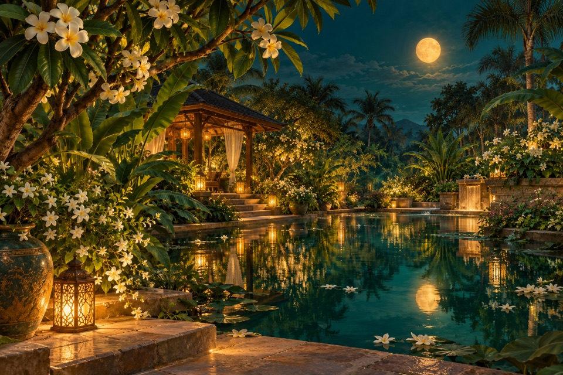

A shared world for future images
Gardens of
Warm Light
An imagined warm land of terraced green valleys, spring-fed stone gardens, flourishing oases and ancient sculptural trees. Each view feels like a comfortable place to pause, with room to discover something extraordinary.
Working name. The ten selected images are the approved anchors; the synthesis below is the design interpretation that will guide new work.

Reference 07 · A clear expression of the shared light, materials and welcoming atmosphere.
What connects your choices
This reading of the shortlist focuses on visible patterns rather than assuming every detail in a selected image is equally important.
- Warmth comes from light, living vegetation and tactile materials; it does not require an orange sunset in every image.
- Shelter and distance work together: a nearby canopy, garden edge or stone opening frames an inviting view.
- The selected set permits both lush abundance and open dunes. Water and flowers are recurring motifs, not mandatory props.
- Wonder comes from distinctive landforms, ancient trees, luminous minerals or generous natural scale. Keep one dominant extraordinary feature per scene.
- No coastal scene appears in the selected ten. Keep beaches secondary for this direction; this is not a permanent ban on coastlines.
- The images share richly observed, painterly naturalism and deep spatial layers. Avoid generic fantasy illustration or flat decorative clip art.
Different places in one imagined land
Use four related landscape families, with natural transitions between them. Each picture belongs to a particular place; it does not need to contain the whole world.
Ancient canopy groves connect the warmer plateaus and valley edges.
A compositional idea for an invented world, not a geographic or theological map.
Terraced valleys
Broad cultivated curves, lush rounded limestone hills, emerald fields, red-earth paths and sparse vertical palm accents. Open, rhythmic and spacious.




Connection: Terraces follow valley contours; small channels lead toward the garden basins below.
Avoid: Cold alpine silhouettes; putting a palm in every corner; forcing a central river into every view.
Gardens of stone and water
Warm sandstone and ivory limestone shelter clear jade springs. An occasional opalescent outcrop or sunlit opening supplies the wonder. Vines and flowers soften mineral edges.


Connection: A spring can emerge beneath a limestone opening, flow across mineral shelves and enter a sheltered canyon.
Avoid: Combining cave, opal mountain, enormous waterfall and palace in one image; icy crystals or dark enclosed caverns.
Oasis margins and dunes
Rose-gold earthen channels, palms and flowering garden edges gradually give way to apricot dunes, rounded granite, acacias and breathing room.




Connection: Irrigated gardens become sparse shade groves and then soft open dunes; let the planting thin naturally.
Avoid: A dense rainforest pasted onto sand; oppressive heat, dust storms, dead trees or empty threatening wilderness.
Ancient canopy groves
Monumental copper trunks or umbrella crowns, pale stone, warm grassy paths and small flowering pockets. The tree silhouette defines the place.




Connection: Dry garden plateaus support broad sculptural canopies, with denser shade toward the valley margins.
Avoid: Treating baobabs and dragon trees as interchangeable; crowding both signature forms into every grove.
The same world at night
Night is a lighting state within this same world, not a separate cold biome. Preserve a recognisable place when creating a day/night pair.


Deep teal and green shadows, creamy flowers, restrained amber pools of light. Keep paths and foliage readable. Occasional modest open timber pavilions, low stone steps and warm lanterns. Architecture supports the garden; it is not the subject of every scene.
Warmth with room for cool relief
Let limestone, apricot earth, living greens and honey light connect the regions. Jade water, deep teal shade and small rose accents keep the palette varied. Some scenes can be pale and airy; others can be rich and enclosed.
Proposed art-direction swatches, visually interpreted from the anchors; not measured pixel samples or validated UI colours.
What stays consistent
- The atmosphere is warm, pleasant, sheltered and unhurried.
- Use softly shaped or weathered terrain with tangible stone, bark, leaf and water textures.
- Use verdant greens with warm mineral colours. Cooler jade water and teal shadows provide relief.
- Compose from somewhere the viewer could comfortably pause. Offer a nearby resting place for the eye and a clear route into depth.
- Use rich detail in selected areas and broad quiet areas elsewhere. Do not make every surface equally busy.
- Keep one dominant landform and one botanical signature. Additional elements support them.
- Vary camera height, framing and land/water balance across the collection. Avoid repeating the same river-between-two-trees template.
- Use a consistent refined oil-and-gouache painterly naturalism, soft atmospheric distance and tactile foreground detail.
- Keep the artistic world separate from hadith meaning: no depiction of narrated events and no claim that a scene shows Jannah or al-Firdaws.
- Hadith wording remains outside the generated artwork and must not be rewritten or turned into decorative image text.
What moves an image outside this world
- Cold dread, snow, harsh wind, barren winter branches and icy light
- Repeated generic island verandas, resort furniture and postcard beaches as the default
- Aggressive cliffs, crashing waves, threatening dark tunnels and precarious viewpoints
- Overcrowding all regional motifs into one scene or flattening distinctive plants into generic tropical foliage
- Uniform sunset orange, fluorescent green, plastic textures, excessive bloom and sharp neon crystals
- People, animals, religious figures, calligraphy, lettering, logos and UI baked into generated artwork under the current landscape-only brief
Make art serve the reading
Immersive welcome
An immersive wide view with a strong recognisable silhouette, layered depth and one quiet area. Prepare framing for the actual desktop and phone containers; do not assume a single crop will preserve the subject.
Compact reading artwork
A close detail or intentionally composed panoramic fragment from the same world. Prefer a terrace curve, canopy edge, stone ledge or water surface. Fewer competing focal points and restrained contrast. Do not shrink a dense hero into a narrow strip.
Matching day and night
Edit the approved day scene: preserve landmarks, geometry, planting and camera position; change lighting and the minimum supporting light sources.
Comfortable text and stable controls
Retain the approved comfortable 21px reading size. Artwork stays separate from the hadith text. Existing accessible reader colours remain until a specific palette change is evaluated. This guide does not introduce animation or rotation.
How future images stay connected
- Read this guide and inspect the relevant selected original images before writing a new prompt.
- Choose one region, one image role, one lighting state, one primary landform and one botanical signature.
- Select two or three relevant anchors: one for landform and composition, one for light and planting, and optionally one for material. State each reference role explicitly.
- Use the common prompt plus a scene-specific brief. Do not concatenate every motif or the original country prompts.
- Keep lighting, materials, painterly rendering and emotional tone consistent while varying geography and composition.
- Generate with the built-in image tool, inspect the result, then test the intended phone and desktop crops before adoption.
- For day/night pairs, edit the approved day image to retain the same place.
- Keep original outputs, exact prompts, anchor IDs, reference roles, image role and tool provenance with each accepted asset. Make lighter delivery copies as needed.
- Treat new outputs as candidates. Reuse the ten approved anchors until the user explicitly promotes new work into the reference set.
Reusable base prompt
Use case: stylized-concept. Create an original landscape for the Hadith reader visual world, Gardens of Warm Light. An imagined warm land of terraced valleys, sheltered mineral springs, oasis margins and ancient sculptural canopies. Use the supplied anchor images in their stated reference roles. Refined oil-and-gouache painterly naturalism, tactile stone and bark, richly observed foliage, soft atmospheric depth. The scene feels pleasant, sheltered and quietly extraordinary. Choose one dominant landform and one botanical signature; preserve breathing room. Warm mineral colours and living greens, relieved by jade water or deep teal shadow when relevant. Warmth need not mean sunset or an orange wash. Use one restrained extraordinary feature at most. This is an imagined reading environment, not a depiction of a hadith event or the actual appearance of Jannah. No figures, animals, lettering, calligraphy, logos or UI. Avoid cold dread, icy light, resort clichés, neon effects and repetitive centred-river compositions. Follow the scene, lighting, composition and delivery-role instructions below.
Four briefs for the next image studies
A terrace at the edge of a stone garden · welcome
A single lush terrace edge overlooks a sheltered garden basin. Warm pale daylight, a broad quiet middle distance and asymmetrical leaf framing. Neither a sunset nor an inventory of every world motif.
Anchors: 03 — terrace rhythm and verdant planting; 07 — warm limestone and clear jade water
The shaded dune path · welcome
One broad-canopied tree shades a warm path at the garden margin, with gentle dunes beyond. Keep the foreground intimate and the background open. No mandatory water feature.
Anchors: 22 — open apricot dune geometry; 24 — tactile trunk and sense of shelter
A spring beneath the plateau · welcome
An airy limestone opening beside a jade spring, with a few rounded opalescent seams rather than giant crystal mountains. Pale honey daylight and generous calm water.
Anchors: 19 — open skylight and sheltered water; 17 — restrained mineral sheen
The lamp beside the garden path · readingStrip
A close panoramic detail of warm stone, a small lantern glow and a few cream blossoms beside still water. Leave quiet space and avoid squeezing a distant pavilion into the strip.
Anchors: 16 — deep teal and local amber light; 21 — low earthen garden edge
Review each new image
- Would this feel like a pleasant place to pause?
- Does it belong beside the chosen references through light, material and painting style?
- Can its defining landform or tree silhouette be recognised quickly?
- Is there breathing room, including in the intended reading-strip crop?
- Does it add a distinct view rather than repeat a previous composition?
- Are wonder and lushness controlled rather than crowded?
- Does the night version remain welcoming and geographically consistent?
- Is all hadith wording outside the image and untouched?